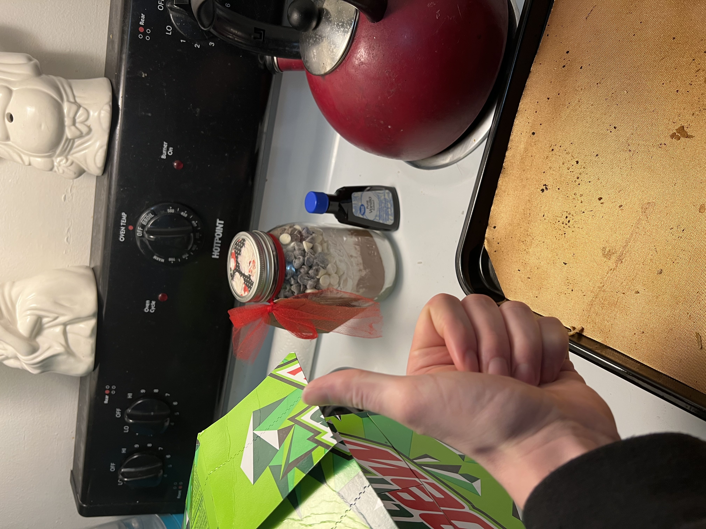

Cookies

One of those mason jars you can get that has all the indredients for cookies inside.
So it doesn't really say what the ingredients are in the jar, but it says to add softened butter
with 1 egg and some vanilla. Cream together. So if you don't have this exact jar of cookie ingredients
then I guess you'll have to find the ingredients from a different cookie recipe and return to this one to
finish.
Ingredients
- Jar of raw cookie ingredients
- 1 ¼ sticks of softened butter
- 1 egg
- 1 ¼ tsp Vanilla
- Preheat oven to 350°F
- Cream together softened butter with egg and vanilla
- Add entire contents of jar in batches, mixing until just combined after each addition
- Drop dough by 1 tbsp portions oonto a baking sheet
- Bake for 8 minutes in the preheathed over
- Cool on a baking rack
- Stuff your fat fucking face with cookies